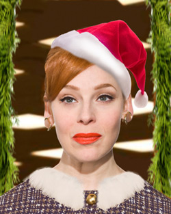

past performance | ||
|  |
THE MAD WORLD OF MISS HATHAWAY Written by & Starring | |
|
After selling out last December's show, and episodes in May and October comes the eagerly anticipated holiday episode of the original musical parody of Mad Men, “The Mad World of Miss Hathaway”. This episode finds the offices of Spencer Colfax Raper & Shenanigans back in the black after a bleak year in the cut throat world of Madison Avenue in 1966. Know-it-all head of the secretarial pool, JoAnne Hathaway tries to keep the office cool and the clients hot at the annual Christmas party as they all anticipate the unveiling of the Grumpford Department stores “Christmas Queen” contest. Who will win? Who will loose? Who'll be drinking way too much booze? Come downtown and find out! Written by and starring Angela Di Carlo (The Downtown Series at Feinstein's, Just to be Polite at Joe's Pub) as JoAnne Hathaway. With a hilarious all-star supporting cast including, Mike Albo (Unitard), Casey Spooner (Fischerspooner, The Wooster Group) David Ilku (The Dueling Bankheads) Jill Pangallo (Happy Go Sad, Unfollow), Kyle Supley (TheVintage Vantage Variety Show) and Adam Dugas (Dueling Harps, Chaos & Candy). With Kyle Forester (Ladybug Transistor, Crystal Stilts) on piano. “The Mad World of Miss Hathaway” was chosen by Time Out New York as a critics pick, featured in the Village Voice several times as a Voice Choice, and written up in Show Business Weekly.com, Next Magazine, Capitol New York, Glittersnipe and Gayletter. After seven hilarious episodes, it has quickly developed a devoted cult following among many fans of Mad Men (and non-fans as well!) | ||
upcoming performances |
|||
 |
|||
| EVQ Film Festival 2018 August 20-25 |
|||
performance archives |
|||
| 2018 | 2017 | 2016 | 2015 |
| 2014 | 2013 | 2012 | 2011 |
| 2010 | 2009 | 2008 | 2007 |